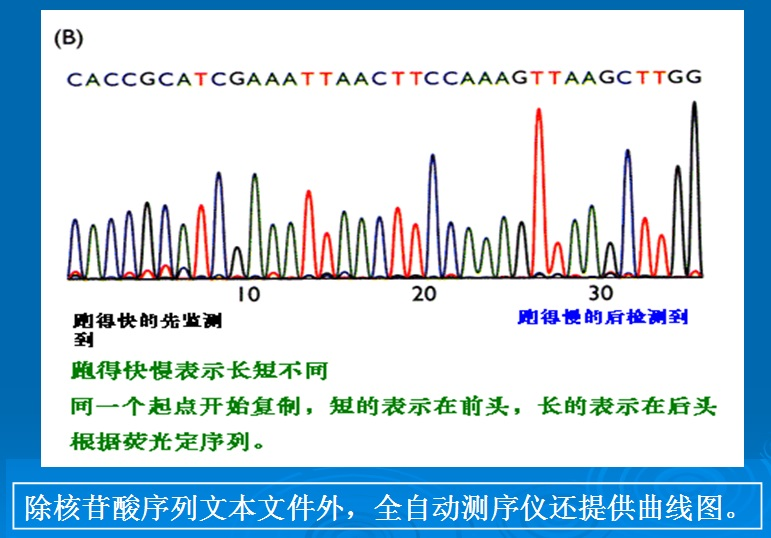
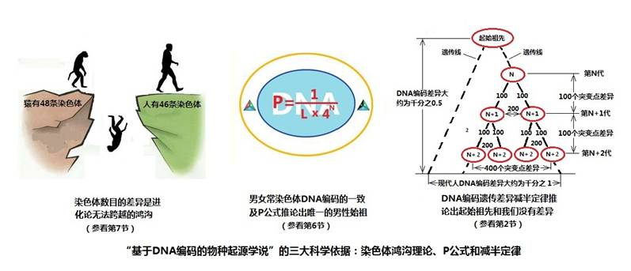

|
十．一个新的、科学的物种起源学——“基于DNA编码之物种起源学说”
X.
A new and scientific origin of species theory – “the origin of species
theory based on DNA codes”
1.物种起源学必须建立在DNA的编码与解码之上
1.
The origin of species theory must be based on DNA codes and decoding
现代科学已经确认生物的遗传信息，全部是源于自身的DNA编码序列。什么样的编码，就编出什么样的物种；什么样的物种，也就有什么样的编码。DNA编码整体序列，万年不变，甚至几千万年不改。由于一切物种的生物特征，都取决于自身的DNA编码，因此，DNA解码是认识物种起源唯一的正确方向和方法。
Modern
science has confirmed that the genetic information of living creatures all
come from their own DNA coding sequences. Different codes will weave
different types of species. Likewise, different types of species will have
specific types of DNA coding sequences. The overall sequences of DNA codes
do not change for thousands or even millions of years. Since biological features of all species depend on their own
DNA codes, DNA codes are the only correct direction and method to
understand origin of species.
各种生物的生理特征和形态特征，都确定于自身的DNA编码。外貌的形态是“表”，内部的“DNA编码序列”才是“里”；前者是“末”，后者是“本”。达尔文建立物种起源时，他只能看到“表”，因此只能从生物的形态上，去建立他的物种起源理论。20几年来，对生物DNA编码的研究，已经彻底地否定了进化论的物种起源理论。一个建立在DNA编码与解码上的物种起源学，已经清晰地显现出它的理论和架构。DNA编码是客观存在于任何生物身上的，是明确的、可见的，更是无法否认的。
Physiological
and physical features of all living creatures are determined by their own
DNA codes. The physical features are “the outside”, while the “DNA coding
sequences” are “the inside”.
When Darwin was first trying to formulate the Theory of the Origin
of Species, he could only see “the outside”. Therefore, his Theory of the
Origin of Species was only based on biological structures. For over 20
years, research on biological DNA codes has completely refuted the
evolutionists’ theory from Darwin’s
Origin of Species. A new theory of the origin of species based on the DNA
codes and decoding has clearly established its principles and practice. It
is quite clear, visible and irrefutable that DNA codes objectively exist in
all living creatures.
进化论是建立在形态、骨骼比较上的假说，又用这个假说去推论不同物种进化的联系。由此，建立了一个全部生物都是同一个起源的进化树。但这个涉及万年、亿年的理论，并没有切实的依据，能够证明一个物种是由另一个物种进化来的。
As
a hypothesis based on the
comparison of shapes and bones, the Theory of Evolution uses this hypothesis to infer the relationships
among different species during evolution and then built an evolutionary
tree to show that all living creatures come from the same source. However,
the theory covering ten thousand years or a hundred million years has no
convincing evidence to prove that one species has evolved from another
species.
达尔文在书中说：“人和他的最近的亲族之间这条链索中存在着一段大空白,而我们又没有任何灭绝了的或现今还存活的物种可以把它填上,这是事实,而这一事实便时常有人提出来, 作为一个严重的异议,驳斥关于人是从某种低级形态传下来的这个信念。但对那些根据种种一般的道理而相信进化原理的人来说,这种异议是不会见得有多大分量的。”“但这些空白不是真的空白，而只是由于中间的亲族连系的形态已经归于灭绝，这才露出了空白”（“人的由来”中国商务印书馆，1997年版，第243页） 。
Darwin said in his book:“The great
break in the organic chain between man and his nearest allies, which cannot
be bridged over by any extinct or living species, has often been advanced
as a grave objection to the belief that man is descended from some lower
form; but this objection will not appear of much weight to those who, from
general reasons, believe in the general principle of evolution. ” ,“But
these breaks depend merely on the number of related forms which have become
extinct.” (Descent of Man,
Chapter VI - On the Affinities and Genealogy of Man, Charles Darwin)
这 一段的表述，完全说明了进化论是一个没有根据的假说。因为说来说去，这个“空白”依然无法填补。达尔文从来没有看见过那些“形态已经归于灭绝”的物种，但 依然认为它们曾经存在，其理由是他们“相信进化原理”。而“进化原理”又是建立在这些“空白”之上的，这本身就是一个奇怪的逻辑。
The statement clearly shows that the
Theory of Evolution is a groundless hypothesis, because by any argument
“the great break” can not be bridged. Although he never saw the species
“that their shapes are extinct already”, Darwin believed that they had existed as
the basis for his “principles of evolution”. Meanwhile, “principles of
evolution” are based on “blank space”, which is a strange logic by itself.
相反，建立在对生物DNA编码进行解码得出的结论，是基于你我身体客观存在的事实，通过科学技术手段，进行大量检测得出的成果。
In contrast, the conclusion drawn
based on the codes of biological DNA codes is a scientific achievement
through advancement in technology and after multiple analyses. The objective facts from our bodies
are the basis on which this
conclusion is built.
2.编码和解码的关系
2. Relationship between codes and
decoding
我们知道，科学是“任何有关物质世界及其现象，并需要用到客观观察和系统实验的知识体系。” （见《大英百科全书》
Encyclopedia Britannica
defines science as: "Any system of knowledge that is concerned
with the physical world and its phenomena and that entails unbiased
observations and systematic experimentation.”
科学是人们的“知识体系”，而且还需要“客观观察和系统实验”来证实，这应该是比较为大家接受的定义。
As
a universally acceptable definition, science is a “knowledge system” and
“that entails unbiased observations and systematic
experimentation.”
生物DNA编码的本身，并不是科学，它仅仅是客观存在的事实。近30年来，人们花费了大量的人力和金钱，将数以亿计的DNA编码序列，传送到了GenBank中，免费供人们查阅。
Living
beings’ DNA codes themselves are not science but only objective facts. For
nearly 30 years, with huge expenditure of manpower and research money,
hundreds of millions of DNA coding sequences were sent to the GenBank
available to the public free of charge.
解码是一个科学分析的方法，是通过检测同一物种的各个体DNA编码序列，比较同一位点上编码的相同与差异，从而找出相互间的联系。亲子鉴定是最基础的一个解码项目。同时，也可以通过对染色体编码序列的数目、长度、形态以及DNA编码的比较，区分出不同的物种。解码得出的结论，是人们认识生物DNA的“知识体系”，是真正的科学。
Decoding is a scientific analytical method to
identify mutual relationship by testing all DNA coding sequences of
individuals of a species and comparing similarity and difference of DNA
codes on similar position. Paternal test is the most basic decoding
project. Meanwhile, different species can be differentiated by comparing
chromosome number, length, shape and DNA codes of DNA coding sequences. The
conclusion of decoding is a real science for people to understand DNAs’” knowledge system” of all
living creatures.
3.我们做了些什么？
3. What have we done?
（1）基于分子人类学研究成果的常态思考
(1) Thoughts based on research achievements of molecular anthropology
分子人类学的研究得出的结论并不奇怪也不神秘，一百多年来，是进化论使人产生了一个错误的概念:人是由低级动物进化而来。因为在人们头脑中，有这样一个错误的概念，一些正确的结论反而变得难以接受了。
The
conclusion derived from research in molecular anthropology is neither strange
nor mysterious. For over 100 years, an erroneous concept from the Theory of
Evolution which has taken root is this: Human beings have evolved from
lower animals. Due to the existence of this erroneous concept in peoples’
minds, it is hard to accept the correct conclusion.
简单地说，分子人类学只是DNA亲子鉴定的扩展。全世界的现代人来自一位唯一的老祖父和唯一的老祖母已是不争的事实。从DNA上来看，这唯一的老祖父和唯一的老祖母都是23对染色体的人，他们的DNA编码与我们几乎没有区别。
To put it simply, molecular anthropology is
nothing but an expansion of the Paternity Test with DNAs. It has become an irrefutable fact that all peoples in the
world come from one and only grand, grand… father and one and only grand,
grand… mother. In terms of DNA, the only grand, grand… father and grand,
grand… mother were individuals with 23 pairs of chromosomes and DNA codes
almost the same as ours.
从这两点出发进行常态思考，就会得出一些简单的结论：
Thinking from the perspective of the above two
points, we can draw the following two simple conclusions:
1）我们的父系和母系树是代代互相绞合在一起的，否则，只要有一代的分离，就没有今天的我们；
1)
Our paternal and maternal trees are intertwined together generation after
generation. Otherwise, modern human beings would not have existed with
separation of only one generation.
2）Y染色体亚当和线粒体夏娃都一定有他们的父亲和母亲以及更早的祖先，直至最早的一对父母。
2)
Y-chromosome Adam and Mitochondrial Eve must have their own fathers and
mothers and more remot
ancestors until the first pair of
parents.
3）所有这些人都是23对染色体的人，他们的DNA编码和你我几乎没有区别。
3)
All these peoples had 23 chromosomes and DNA codes almost the same as ours.
如果您认真看过本网的全部内容，您就不会有异议。
If
you have seriously read all the contents in this website, you will not have
any doubt.
然而，就是这些简单的结论，困扰了分子人类学的研究者们近20年了。在本网的前5节中，我们除了介绍分子人类学的现有成果外，就是阐明了这3个简单的结论。
However,
these simple conclusions have perplexed researchers of molecular anthropology
for nearly 20 years. In the first 5 parts of this Website, we have provided
evidence for the 3 simple
conclusions besides giving an introduction to the scientific achievements of molecular
anthropology.
（2）我们的研究基础
(2) The basis of our research
本网第6节到第10节，是我们对分子人类学进行扩展研究的成果。有人会说，你们又不具体的去进行DNA样本测序，怎么能称为研究呢？
Part
6 to Part 10 could be considered the achievements of our “ research” in
molecular anthropology. Someone might question whether ours could be
considered as” research”, since we have not engaged in actual specific DNA
sample sequencing.
的确，得到DNA样本的DNA序列，是一个十分繁琐、艰巨的工作。但是，当DNA序列测定的技术和仪器设备比较完善后，DNA测序只是大量的操作工作了，特别是现在有一些自动化的设备以后，更是这样。图10-7 表示了自动测序仪屏幕上显示的一段DNA编码序列。
Indeed,
it is a very complex and hard work to acquire DNA sequences from DNA
samples. However, with improved technology and devices, especially some
automatic equipment, DNA sequencing is nothing but large amount of
operational manuvers. Figure 10-7 shows a segment of DNA coding sequence
displayed on the screen of an automatic sequencer.

图10-7 自动测序仪可以提供的DNA编码序列
Figure
10-7 DNA Coding Sequences Provided by Automatic Sequencer
显然，DNA的测序以及将短序列合并成完整序列，是一项重要的研究工作。但是，将这些DNA序列放到GenBank以后，就需要更多的人加以分析研究。我们引用的DNA序列，虽然只是很少的数量，却牵涉到很多的基因组。没有任何一个独立的研究机构，可以独自的完成这些基因组的测序工作。总之，我们的研究是建立在基因银行提供的DNA编码上，基因银行设置的目的就是提供给人们去研究。
Obviously,
it is very important research to sequence DNAs and merge short sequences
into whole pieces. However, after they have been submitted to GenBank,
these DNA code sequences need many more people to do analytical research.
Even though we have cited very few DNA sequences, yet they are related to
many genomes. No single research institution can independently complete all
these genome sequencing. In sum, our research is based on DNA codes
provided by the GenBank, which
has been established for interested individuals to do research.
目前，已经开始了第三代测序技术，即直接测序技术的研究和应用。这是通过现代光学、高分子、纳米技术等手段来区分碱基信号差异的原理，达到直接读取序列信息的目的。新的测序技术的出现会大大降低测序费用，并使检测变成简单的操作。以往测定一个人的基因组要花费上千万美元，新的技术将只要上千美元就可以得到同样的检测结果。
So
far, the third-generation of sequencing technology has been started to
conduct research and seek new application of this direct sequencing technology
By modern optics, macromolecules, nanotechnology and other methods to
unveil the principle of base signal differentiation. base so that
someday directly reading of
sequence information could be achevied. The successful introduction of this
new technology will greatly lower the cost of analysis as well as simplify
the process. In the past, it
cost over USD 10 million do decipher the human genome of one single
individual. With this new technology, it costs only about USD 1,000 to
achieve the same test result in sequencing genome of a person.
（3）跳出进化论的束缚
(3) Break away from the constraints
of Theory of Evolution
从第6节到第10节的内容中，我们有许多的结论，是来自对DNA编码研究分析的结果。
From
Part 6 to Part 10, our many conclusions are drawn by analyzing DNA code
research.
这些结论，虽然在当今的学术刊物上没有看到，但是我们相信这些结论是经得起检验的。可能令大家感到诧异的是，这些结论怎么和进化论那样不同呢？这只是因为我们跳出了进化论的束缚。
Although
not appearing in the current academic publications, these conclusions, we
believe, can withstand the test of time. It may be surprising why the
conclusions are so different from those of the Theory of Evolution. The
reason is that we have broken away from the constraints of the Theory of
Evolution.
我们有哪些新结论呢？大致可以归纳到以下几点：
What are our new conclusions? They can be
summarized as follows:
1）目前的分子人类学仅仅是限于对Y染色体和线粒体DNA标记的研究，而我们扩大到对常染色体DNA标记的研究上；
1) Modern molecular anthropology is just limited
to research on Y-chromosome and mitochondrial DNA markers, while we have
expanded to research on autosome DNA markers;
2）以往的研究，例如从ZFY基因的729个编码推论出了“Y染色体亚当”，并没有准确阐述这个推论的必然性。在第6节中，我们引入了骰子理论的P公式，从数学上，确定这个结论的必然性。同时，也扩大并应用于常染色体和线粒体DNA标记的判断上。
2) The past research ( e.g. Y-chromosome Adam
inferred from the 729 DNA codes of the ZFY genes) has not accurately stated
the necessity of the conclusion. In Part 6, we have introduced Formula P
from the Dice Theory and mathematically determined the necessity of the
conclusion. Meanwhile, we have also expanded and applied the same to
scrutiny of DNA markers from autosome and mitochondrial DNAs.
3）由以上两点，我们推论出：全世界人来自一对父母，而且DNA是纯正的，没有掺入任何杂质；同时，也推论出“唯一亚当”和女人出自男人——“科学夏娃出自科学亚当的理论”；人类DNA上看不到进化，连微进化也没有。
3) From the above two points, we can infer that
all the peoples in the world come from a single couple of parents, and
their DNAs are consistent without any impurities; women come from a man,
i.e. “the theory of Scientific Eve from Scientific Adam”; no evolution,
even microevolution, is shown
in human DNAs.
4）依据DNA编码定义了“什么是人”：既然确定现代人的DNA编码是出于最早的一位男人━━科学亚当，那么，就可以定义为“只有科学亚当的后裔，才是人”。
4) “Human being” is defined by the DNA codes.
Since we are certain that DNA codes of modern human beings come from the
earliest man, Scientific Adam, it can defined that “only descendents of
Scientific Adam are human beings”.
这个定义是可以进行检测的：每一个男人身体中必然都有729个编码的“亚当标记”；必然都有2号常染色体上789个编码的“第一标记”、必然都有线粒体DNA“夏娃标记”；每一个女人必然都有2号常染色体上789个编码的“第一标记”、必然都有线粒体DNA“夏娃标记”。这是鉴定是否是“人”的唯一根据。目前几百万人的DNA样本检测结果，都可以见证这个结论。
The definition can be tested that every man must
have the “Adam marker” of 729 DNA codes as well as “the First Marker” of 789
DNA codes on No. 2 autosome and “Eve Marker” of mitochondrial DNA codes;
every woman must have “the First Marker” of 789 DNA codes on No. 2 autosome
and “Eve Marker” of mitochondrial DNA codes. This is the only evidence to
verify being a “man”. So far, the conclusion can be confirmed by DNA sample
test results of millions of people.
5）我们提出了在DNA编码上，承载着“非物质的遗传信息”的概念。每一个孩子从父母那里，不仅得到了身体，也获得了不能从肉体上看见的“非物质的遗传信息”。人类具有任何动物无法比拟的智慧，这些智慧虽然绝大多数来自于成长后的学习。但是，学习和取得这些智慧的“能力”，绝对是在胚胎时期就已经具备了。
5) We have suggested the concept of “nonphysical
genetic information” carried by DNA codes. Every child has received not
only a body but also the invisible “nonphysical genetic information” from
his or her parents. Human beings have wisdom unparalleled by any animal
though mostly from learning during growing up. However, the “ability” to
learn and acquire wisdom is absolutely present during the embryonic period.
6）“DNA编码遗传差异减半定律”：每一代父母和子女的DNA编码差异，仅仅是子女相互间DNA编码差异的一半。因此，科学亚当（或科学夏娃）和现代人DNA编码的差异，仅仅是现代人之间DNA编码最大差异的一半。由此可以看到，不但现代人之间不存在进化的差异，人类从来也没有发生进化。（参看本网第二节，第3页）
6) “The law “the difference of DNA coding
being one half”states this: DNA code difference between parents and children of
every generation is only one half of that between the children. Therefore,
the difference between Scientific Adam (or Scientific Eve) and modern human
beings is only one half of the maximum DNA code difference between modern
human beings. Therefore, not only difference does not exist between modern
human beings, but evolution has never occurred in human beings. (See Part 2
of this Website, page 3)
7）我们把对人类DNA的分析方法用到了动物和植物，发现各个物种都有各自的“起始个体”；各个物种之间有着染色体对数和DNA差异的鸿沟，相互之间没有进化或演化的联系，简而言之是“各从其类”。
7) By applying analytical methods from human DNAs
to animals and plants, we find that all species of living beings have their
own “initial sources”. A gulf exists in chromosome pair numbers and DNA
differences among all the species, which means that they are not related by
evolution or gradual transformation. Simply speaking, they exist each
“according to their kinds” in short.
8）我们的研究归结为“基于DNA编码之物种起源学说”。
8) Our research can be summarized as “Origin of
Species Theory Based on DNA Codes”.
（4）基于DNA编码和解码的分析方法
(4) Analytical method based on DNA codes
and decoding
DNA编码测序和人类基因组的测定，是近代科学的重大成就，也使人类从此走上了正确认识自己的方向和道路。通过我们自身的DNA编码，使我们从进化论的迷失中走了出来。当生物的DNA编码放入基因银行之后，对于DNA编码下物种起源的学说，剩下的仅仅是对编码的分析。归根到底，是基于DNA编码和采用了DNA解码的方法。我们使用的DNA解码钥匙仅仅是一个P公式，一个十分简单的概率计算公式。只要编码和P公式计算这两点不错，我们的结论就不会错。这两点会错吗？
The
determination of DNA code sequencing and human genome is a seminal
achievement of modern science with which human beings have embarked on the
right direction and path of understanding themselves. Through our own DNA
codes, we have escaped from the perplexity of Theory of Evolution. When DNA
codes of living creature were submitted to GenBank, the only analysis on
DNA codes left to be done for the” origin of species theory under DNA
codes” is DNA decoding. The DNA
decoding key we have used is nothing but Formula P and a very simple
probability calculation formula. Our conclusion will not be wrong, as long
as DNA codes and Formula P are correct. How can the two points be wrong?
4. “基于DNA编码之物种起源学说”的任务
4.
Tasks of the “Origin of Species
Theory on the Basis of DNA Codes”
“基于DNA编码之物种起源学说”的基本任务是：
As
a fundamental task of the “Origin of Species Theory on the Basis of DNA
Codes”, we shall:
（1）划分物种：
(1) Differentiate the species:
只 有“源于同一起始个体”下的生物，才属于同一物种，否则，就不是同源的。例如：人和黑猩猩是否同源；非洲疣猪和普通家猪是否同源；美国野牛和黄牛是否同源 等等，这些分辨工作都是为了这个基本任务。从前面的内容中可以看到，关于这几个疑问的结论，都是通过对染色体或者线粒体DNA的解码与比较得到的。从DNA编码上可以看到，物种不会演变和转换。进化论在物种划分上，是依据外表形态，并基于物种能够发生演变的假说来进行的。然而，这个理论却无法面对DNA的编码和解码的科学事实。
Only
living creatures from the “same initial source” belong to the same species.
Otherwise, they cannot come from the same source. For example, whether
human beings and chimpanzees come from the same source, whether African
Warthogs and common pigs come from the same source, whether American
buffalos and cattle come from the same source, etc. The work to
differentiate species is the purpose of achieving the fundamental task of
the “origin of Species Theory on the Basis of DNA Codes.” The above
contents show that the conclusion from these questions have been drawn
through DNA decoding and the comparison of chromosomal or mitochondrial
DNAs. DNA codes show that species cannot just evolve and transform. In
species differentiation, the Theory of Evolution is based on external
appearances and the hypothesis that species can transform. However, the
theory cannot withstand the scientific facts of DNA codes and
decoding.
DNA编码划分物种的依据，是基于DNA序列上的“固有标记”。线粒体的原始序列，染色体上的一些长序列，只要各个体都存在着这个序列，这个序列就是“固有标记”，因为它不可能由随机的过程产生。
The
ground for species differentiation by DNA codes is based on the “inherent marker”
of DNA sequences. The original sequences of mitochondria and long sequences
of chromosomes can be “inherent markers” if they exist in all individuals,
for they cannot be generated at random.
再用P公式（DNA骰子理论）进行分析，就能判定是否同源。
Analysis
with Formula P (or the DNA Dice Theory) can allow us to judge if there is
source sharing.
（2）以DNA解码划分各物种的单倍群：
(2) Haplogroups to differentiate all
species by DNA decoding:
各物种从起始源开始繁衍以后，他们的后代一直在复制源头的DNA序列。但是在这些复制的过程中，会产生突变，因此在他们保持“固有标记”的同时，也会携带“突变标记”。在向下繁衍中，“固有标记”和“突变标记”都会同时向下传递。“突变标记”是划分单倍群的依据，人类的Y染色体DNA单倍群和线粒体单倍群,都是这样得到的。同样，也可以绘出其他物种单倍群的父系和母系树谱图。
After
all species start to breed from their original sources, their descendents
have kept replicating the same DNA sequences fron their original sources.
However, during the replication process, some mutations may occur, so that
they also carry “mutation markers” while keeping the “inherent markers.”
During breeding downward, both “inherent markers” and “mutation marker” are
passed down as well. “Mutation markers” form the basis for separating
haplogroups. Both Y-chromosome DNA haplogroups and mitochondrial
haplogroups of human beings are acquired this way. Meanwhile, paternal and
material haplogroup trees of other living creatures can also be drawn.
（3）描绘出各物种繁衍和迁徙的历史：
(3) A description of breeding and
migration history of all species
有了单倍群树谱图，下一步是通过在世界各地采取物种的DNA样本，并依据这些样本，绘出各单倍群的分布图。这样就可以发现物种的发源地，进而得出物种各单倍群的迁徙图。在第5节中所描述的人类“伊甸园”的发现和人类走向世界的过程，可以作为寻找一切生物发源地和迁徙历史的典范。
With
haplogroup trees, we shall draw all haplogroup distribution charts on the
basis of the species DNA samples collected worldwide. In this way, we can
find the place of origin of these species and acquire all the haplogroup
migration charts about all species. The discovery of human “Garden of Eden”
and the process by which human beings expanded to all parts of the world
can be an examples of searching for place of origin and migration histories
of all living creatures.
十一．如果DNA编码是进化而来
Ⅺ.
If DNA codes came from evolution
当生物的DNA编码被发现以后，在很长时期中，进化论都无法面对。后来，有进化论者给予了这样的解释：“DNA随机突变是进化的动力，自然选择引导了进化的方向”。然而，当生物的基因组被一一公布后，发现物种内部各个体的DNA序列是那样的一致，以随机为基础的进化论再也无法立足了。
After
DNA codes of living creatures were discovered, evolutionists could not
accept them for a long time. Later, some evolutionists explained, “DNA
mutation at random drives evolution, and natural selection guides the
direction of evolution. However, after genomes were published one by one,
which showed that DNA sequences of all individuals within the same species
are very consistent, the Theory of Evolution on the basis of randomness
lost its final ground.
如果DNA编码是随机进化而来，世界将是什么样子呢，让我们来想象一下：
Let
us imagine what the world would look like, if DNA codes have evolved at
random.
按照进化的假说，人是由爬行动物，因为DNA的突变，经过长期演变，经历了一级级不同层次的动物阶段，由低级动物慢慢变成了人。如果真是这样，人们的DNA序列将是千差万别：细胞核中的染色体（一条条的DNA序列）将不会都是相同的条数、相同的类型；人们的染色体的着丝粒的位置，也会各不相同；人们细胞核中DNA编码的总数目不会都是60亿；各编号染色体的长度，也有着很大的区别；DNA编码不会有相同的“固有标记”；基因的位置数量都有很大的差别；等等。由此，人类的外形将是各式各样，绝不仅仅是肤色的差别。许多人的群体也不能通婚、不能互相输血，等等。
According
to the hypothesis of Theory of Evolution, the evolution of human beings
have been a long process involving DNA mutations and through different
stages and levels of animals, such as lower reptile. If it were true, the
DNA sequences of human beings would be dramatically different, the
chromosomes (i.e. pieces of DNA sequences) in cell nucleus would not have
identical number and type; the
centromere positions of human chromosomes would be also different; the
total number of DNA codes in human cell nucleus would not be over 6
billion; the chromosome lengths of all codes would be significantly
different, etc. DNA codes would not have identical “inherent markers”; the
number of gene positions would also be very different, etc. Therefore,
other than just skin, human physique would be dramatically different. Many
people would not intermarry, donate blood for transfusion, etc.
同样，海中的鱼类，天上的飞鸟，牛、猪等动物，都会有远远超过现在的种类和形态；大麦、小麦和稻米，也不会粒粒都有相同的形状。总之，那绝不会是现有的有序世界，而是一个混乱无序的世界，因为一切都是DNA随机突变的结果。不要忘记：随机不能带来有序！
Likewise,
fishes, birds, oxens, pigs and other animals would have far more types and
shapes than those we see today; barley, wheat and paddy would not have
grains with the same shape. In sum, the world would be disorderly and
chaotic as compared to the one today, because all were results of DNA
mutations at random. Always keep in mind, “order can never be achieved
at random!”
十二.
“染色体数目差异的鸿沟”对垒“达尔文的罗威纳犬”道金斯
Ⅻ.
The gulf of chromosome number difference vs. “Darwin's Rottweiler” Dawkins
理查德.道金斯是谁？是当今最有名的达尔文的拥护者，英国演化生物学家。他宣称“进化是一个事实。它排除了合理怀疑，超越了严重的怀疑，超越理智、卓有见识、睿智的疑问，毫无疑问的是进化是一个事实。”[注释 8]。
Who
is Richard Dawkins? He is the best-known advocate of Darwin and a British
evolutionist. He declared that “Evolution is a fact. Beyond reasonable
doubt, beyond serious doubt, beyond sane, informed, intelligent doubt,
beyond doubt evolution is a fact.” ”(Reference 8)
他也因为致力于捍卫这个虚假的科学━━进化论，得到许多耀眼的头衔和光环，并在网上拥有几十万的粉丝。
Dedicated
to defending the false science (i.e. Theory of Evolution), he has received
many brilliant titles, halos and tens of thousands of fans on the
Internet.
我们必须承认，道金斯先生对生物学和生物的DNA编码有着丰富的知识。遗憾的是，因为对进化论的迷信，使他蒙住了自己的眼睛。因此，在他的著作中充满了矛盾。
We
have to admit that Professor Dawkins has a sound knowledge in biology and DNA
codes. Unfortunately, he cannot open his eyes and blindly believes in the
Theory of Evolution. Therefore, his work is full of contradictions.
在他的“伊甸园之河”中，有这样的一段文字[注释9]：“我们可以得出以下结论：
In his book, “River out
of Eden”,
we can read the following words:
"We may come to the following conclusions:
第一，必定存在着一位我们可称为“线粒体夏娃”的女性，她是所有现代人最晚近的纯粹母系共同祖先。
第二，必定还有一个称为“焦点祖先”的人，其性别尚不为人知，却是所有现代人通过任何遗传途径而来的最近的共同祖先。
第三，虽然线粒体夏娃和“焦点祖先”有可能是同一个人，但很不可能。
第四，“焦点祖先”更有可能是男性，而不是女性。
第五，“线粒体夏娃”很可能生活在25万年前。
第六，对于“线粒体夏娃”生活于何地，尚存争议，但是从已报道的观点看，人们仍倾向于非洲。
只有第五条和第六条要靠科学证据来检验，前四条只需借助常理进行推断即可得出。”
First, it is necessarily
certain that there existed one female, whom we may call Mitochondrial Eve
, who is the most recent
ancestor of all modern humans down the female-only pathway.
Second, it is also
certain that there existed one person, of unknown sex, whom we may call the
Focal Ancestor,
who is the most recent
common ancestor of all modern humans down any pathway.
Third, although it is
possible that Mitochondrial Eve and the Focal Ancestor are one and the
same, it is
Vanishingly unlikely
that this is so.
Fourth, it is somewhat
more likely that the Focal Ancestor was a male than a female.
Fifth, Mitochondrial Eve
very probably lived less than a quarter of a million years ago.
Sixth, there is is
disagreement over where Mitochondrial Eve lived, but the balance of
informed
opinion still favors Africa. Only conclusions five and six depend on
inspection of scientific evidence. The
first four can all be
worked out by armchair reasoning from common knowledge."
(Reference 9)
这和本网的结论：全世界人都是“科学亚当”的后裔何等一致啊！显然，这种一致是建立在DNA编码的事实上。立足于“群体进化”上的进化论，是不可能得出所有现代人，都有一个男性“焦点祖先”这样的结论。道金斯先生能够面对这些DNA编码事实的同时，却不敢面对不同物种在染色体数目上差别形成的鸿沟。其实，他距抛弃进化论只有一步之遥。
How
consistent the above conclusions are with the conclusion of this website:
All people are offspring of “Scientific Adam”! Obviously, the consistency
is built on the evidence from DNA codes. Rooted in population evolution,
the Theory of Evolution cannot draw
the conclusion that all modern human beings have the single male
“focus ancestor”. Although Professor Dawkins could face the facts of DNA
codes, he dares not accept the
gulf formed by different species with different chromosome numbers. In fact, he is just
one step from giving up the Theory of Evolution.
在他的另一本书中,列出了人-黑猩猩-老鼠的同一个基因（FoxP2）的DNA编码序列片段,他说“在该基因的2,076个字符上,人和黑猩猩只有9个 字符的差异,和老鼠只有139个字符的差异.”
他做出结论:
:“黑猩猩是我们的近亲，老鼠是我们更远房的亲戚”。
Another book by
him lists DNA coding sequence segment of the same gene (FoxP2) from human beings, chimpanzees, and mice. He said："
Of the total of 2,076 nucleotides in FoxP2, the chimpanzee has 9
nucleotides different from ours, while the mouse has 139 nucleotides
different. ” His conclusion was that “Chimpanzees are our close cousins，Mice
are our more distant cousins.” (Reference 10)。
这里,他回避了一个重大的问题,那就是我们有23对染色体,黑猩猩有24对染色体,而老鼠只有20对染色体。如果3者有共同的祖先，那么，这个最早的祖先是多少对染色体呢？如果是20对，又怎么变成24对，然后又变成23对？ 40条（20对）的动物群体是怎样变成了48条染色体的动物群体？而后，由怎样产生出46条染色体的人？这一条条“染色体数目的鸿沟”，是如何通过一点点的微小进化跨过的？对于坚守进化论立场的道金斯先生，染色体数目的差异，也是他自己无法“利用微细的、连续的变异”跨过的鸿沟。
Here,
he avoided a major problem that is human beings have 23 pairs of
chromosomes, chimpanzees 24 pairs of chromosomes, and mice just 20 pairs of
chromosomes. How many chromosomes did the earliest ancestor have, if the
three species have one common ancestor? Why did the pair number change to
24 and then 23, if it had 20 pairs to begin with? How did it fill up the
“chromosome pair gulf” through small tiny evolutions? With Professor
Dawkins standing firm to his position of the Theory of Evolution, the
difference of chromosome number is also a gulf he cannot bridge “by numerous, successive, slight
modifications” .
他还说：“我 们是黑猩猩的堂兄弟，关系稍远的猴子的表兄弟，关系更远的土豚和海牛的亲戚，还是再远些的香蕉和萝卜的亲戚...这份名单要多长有多长”。
He
also said this: “It is a plain truth that we are cousins of chimpanzees,
somewhat more distant cousins of monkeys, more distant cousins still of
aardvarks and manatees, yet more distant cousins of bananas and turnips …
continue the list as long as desired.”(Reference11)
请问，这里面那么多鸿沟的隔离，“道金斯先生的亲戚们”是怎么跨过来的？
Please answer this
question: With all these gulfs, how did Professor Dawkins’ relatives manage
to bridge them?
聪明的道金斯先生既然知道“DNA符号的复制，其精确度可与现代工程师们所做的任何事情相媲美”，那么，一定知道染色体也是极精确地被复制着，因为染色体就是“一串DNA编码”。因此，生物体内的染色体长度都是基本恒定的，染色体的数目更是不可能通过“进化”发生改变的。
Since
clever Professor Dawkins already knows that “DNA characters are copied with
an accuracy that rivals anything modern engineers can do.”(Reference 12) he
must also know that chromosomes are very precisely replicated as “strings
of DNA codes”. Therefore, the chromosome lengths in living creatures are
largely constant, and the number of chromosomes is even more impossible to
be changed by evolution.
在他所有的著作中，都没有提及这个重大的课题，他多次提到的黑猩猩、猴子、马和驴等动物，却从来不讲它们的染色体数目。这不是他的疏忽，也不是他不知道，唯一的答案是，他无法解释进化论能如何跨越这些鸿沟，他在刻意回避这个关键的问题。当年，达尔文提出进化论、米瓦特提出骤变论，是可以理解的，因为他们没有现代的科学手段和信息。如今继续坚持这两个理论，去误导我们的孩子们，就实在不可原谅了。
In
all his works, he did not mention this key project. Although he has mentioned
chimpanzees, monkeys, horses, donkeys, etc., many times, and yet he has
never talked about their chromosome numbers. The only logical explanation
is that, rather than being negligent or ignorant, he is unable to interpret
how the Theory of Evolution can fill up these gulfs and thus intentional
avoids mentioning this key topic. It is understandable that Darwin and
Mivart raised Theory of Evolution and Theory of saltation respectively,
because they did not have modern scientific methods and information.
However, it is unforgivable to mislead our children by sticking to the two
theories above given the scientific advancement today .
非常有趣的是，道金斯就像现代的达尔文；柯林斯就像现代的米瓦特。道金斯应该读过柯林斯的著作━━“上帝的语言”，一定知道柯林斯设想用骤变来跨过染色体数目的鸿沟。但是，他比柯林斯更熟悉“物种起源”的第六章，清楚地知道米瓦特的“骤变”理论是和进化论对立的，因此，道金斯十分明确地反对“骤变论”。
It
is very interesting that Dawkins is like a modern Darwin, and Collins a
modern Miwart. Dawkins should have read the book by Collins, The Language
of God, knowing that Collins proposes to fill up the gulf of chromosome
number by saltation. However, he is more familiar with Chapter VI of
Darwin’s Origin of Species than Collins and clearly aware that the theory
of “Saltation” of Mivart is opposition to the Theory of Evolution, so he
resolutely objects “the Theory of Saltation.”
他说“在一次传代中跨过巨大的鸿沟（让猴子生下人类婴儿）几乎就像神创造一样不可能”。看哪，道金斯和柯林斯在互相“打架了”！然而，即使是面对一条几米宽地面上的深沟，也不是道金斯先生用一厘米、一厘米前进的方式能够通过的。总之，无论是柯林斯还是道金斯以及其他的进化论崇拜者，在现代的电子显微镜和DNA编码之下，谁都用进化论跨越不了这些鸿沟，谁都无法维护进化论破产的命运了。
He
said that “Huge leaps in a single generation—which is what a monkey giving
birth to a human would be—are almost as unlikely as divine
creation,”(Reference 13) See, Dawkins and Collins are “fighting” with each
other! However, even for a wide gap of several meters on the ground, Mr.
Dawkins can not cross it through advancing one centimeter by one
centimeter. In sum, under modern electronic microscopes and DNA codes, no
matter Collins or Dawkins or any other evolutionists cannot fill up these
gulfs with the Theory of Evolution and save it from bankruptcy.
我们可以将道金斯他书中的核心理论归纳如下：1）所有生物都有DNA螺旋体，而且某些DNA编码序列差别不大，证明是来自一个源头；2）DNA随机突变和减数分裂形成的变异是进化动力；3）基因会因为DNA的突变而变强或变弱━━像许多自私的小精灵那样控制着人体，基因的变化确定了生物的生存能力强、弱；4）进而，自然选择引导了进化的方向。他作出的结论是：“进化论是无可争议的事实。”
We
can summarize the core theories of the book by Dawkins that 1) all living creatures
have DNA spiraling shapes, and
some DNA coding sequences have no significant difference, so they must come
from the same source; 2) the variation caused by DNA random mutation and
meiosis is the driving force of evolution; 3) genes may become stronger or
weaker due to DNA mutation like many selfish elves controlling human
bodies; changes of genes determine the strength to survive in living creatures; 4) then natural
selection guides the direction of evolution. His conclusion is this: The
Theory of Evolution is irrefutable fact.
我们的回答：
Our
answer:
所有生物都有DNA螺旋体，不同物种也可能有某些相近似的DNA编码片段，那只能证明造成生物的基本材料是一致的；变异的确能够使个体产生差别。然而，重要的是：
All
the living creatures have DNA spiraling shapes and different species may have
similar DNA code segments which proves that the basic material is
consistent in creating living creatures. Variation is indeed able to cause
differences among individuals. However, it is important that:
1）人和黑猩猩有一个染色体数目差异的鸿沟，人和黑猩猩不可能共祖，其它生物同样有这个阻隔。
1)
With the gulf of chromosome number difference, it is impossible for human
beings and chimpanzees to share an ancestor. The same is true for other
living creatures.
2）随机的突变和减数分裂联会因素，不可能将全世界人的DNA编码形成一致。人类DNA的固有标记──大段“极其一致的DNA编码”，证明全世界人来自唯一的一位起始的个体──科学亚当。只要打开本网附录的27个编码序列，使用P公式（DNA概率公式）分析，就无法不承认这个结论。
2)
With factors such as random mutation, meiosis and synapsis, it is
impossible to make consistent DNA codes for all the peoples in the world.
The inherent marker of human DNAs( i.e. large pieces of “extremely
consistent DNA codes) proves that all peopled in the world come from the
only initial individual, Scientific Adam. We have to recognize the
conclusion, when reading the 27 coding sequences in Appendix of this
Website and analyzing with
Formula P (i.e. DNA probability formula).
3）“DNA编码遗传差异减半定律”可以证明，我们起始的祖先和我们的DNA编码几乎没有区别。因此，起始祖先的“物质的遗传信息”、“非物质的遗传信息”以及基因和我们几乎没有区别。祖先━━“科学亚当”先生和道金斯先生的差异，比我和道金斯先生的差异还要小。
3)
“DNA code Genetic Difference Halving Law” can prove that the DNA codes are almost
identical between our initial ancestors and our own DNA codes. Therefore,
we are identical with our initial ancestors in “physical genetic
information”, “nonphysical genetic information” and genes. The difference
between the ancestor, Scientific Adam and Professor Dawkins is even smaller
than Professor Dawkins and me.
我们的结论是：人类没有进化，连微进化也没有；生物之间不存在进化的联系；这是DNA编码表明的科学事实。
Our conclusion is this: Human beings have
neither gone through evolution nor microevolution, and there is no
evolutionary connection between living creatures which is a scientific fact
shown by DNA codes.
自“科学亚当”和“科学夏娃”产生后的20几万年以来，基因DNA编码基本没有改变，不同族种的基因编码也基本相同。否则，各大陆的居民之间就不可能通婚和生育了。
For
over 200,000 years after the birth of “Scientific Adam” and “Scientific Eve”,
genetic DNA codes have never changed, and DNA codes of all races have
remained the same. Otherwise, residents from different continents could not
intermarry and breed.
道金斯虽然以华丽的词藻、动人的逻辑推理，编织出了一个个离奇的生物进化故事。但是，真理往往是简单的，在DNA编码和数学的面前，他必须面对的挑战是：
Dawkins
has woven fantastic biological evolution stories with elegant words and
moving logical inferences. However, the truth is usually simple. In the
face of DNA codes and mathematics, he must face the following challenges:
（1）进化论是如何能以“利用微细的、连续的变异”跨过染色体对数的鸿沟？谁证明了人和黑猩猩共祖？
(1) How can the Theory of Evolution bridge the
chromosome pair gulf “by numerous, successive, slight modifications,”? Who
has proven that human beings and chimpanzees share ancestors?
（2）全世界人DNA编码的极其一致，怎么可能随机地进化产生？
(2) How can DNA codes evolve at random since DNA
codes of all the peoples in the world are very similar?
（3）本网提出的P公式（DNA编码数学概率分析）和“DNA编码遗传差异减半定律”能被否定吗？
(3)
Can Formula P (i.e. mathematic analysis of DNA codes) and “DNA code Genetic
Difference Halving Law” be refuted?
我们期待着他的回答，也在这里向他提出挑战：我们愿意和道金斯先生辩论，无论是面对面的辩论或者是笔论，无论在何时何地。
We
are expecting Professor Dawkins’ answer and pose a challenge to him: we are willing to debate
with Professor Dawkins, either face to face or in writing at any time and
place.
我们也欢迎所有生物界的专家、教授们前来挑战，让我们一起来诚实地寻求生物学上真实的科学。
Welcome
all experts and professors in biological sciences to challenge us. Let us
honestly seek the TRUTH in the science of biology.
十三.结语
XIII.
Conclusion
从人类和其它生物基因组研究的成果看到，由于DNA复制有高度的准确性，各生物物种自身的DNA序列极其一致。这个科学事实，彻底地颠覆了随机进化的假说。
The achievements of research on the genomes of
human beings and other living creatures show that because of the high
accuracy of DNA replication, DNA sequences of each species are very
similar. The scientific fact has thoroughly discredited the hypothesis of
evolution at random.

图10-8 鸿沟、P公式和减半定律
Figure
10-8 Gulf- Theory, P Formula, the Low of DNA coding being one half
可以将我们的核心观点概括为以下3点：
Our
core opinions may be summarized with the following 3 points:
(1) 鸿沟理论：即“染色体数目的差异是进化论无法跨越的鸿沟”理论。它否定了由一个物种进化成另一个物种的可能性，也就否定了类人猿进化成人的可能性；
(1)
Gulf theory. “The difference of chromosome numbers is an insurmountable gulf”.
It refutes the probability of one species evolving into another, including
man apes evolving into human beings;
(2) P公式：男、女常染色体DNA编码一致的事实，可以借助DNA骰子理论的P公式，推论出全人类出自唯一的男性始祖—“唯一亚当”；
(2)
Formula P: From the fact the DNA codes of autosomes are consistent between
men and women, we can infer that all human beings come from the only male
ancestor (i.e. Formula P of DNA Dice Theory).
（3）减半定律：即“DNA编码遗传差异减半定律”，由此定律可以推论出起始祖先和我们没有差异，完全否定了在物种内部进化和微进化的可能性。
(3) Halving Law or The law “the difference of DNA coding being one half”: By this Law, we can infer
that no difference exists between our initial ancestor and us, which
completely refutes the probability of evolution and microevolution within
species.
以上三点是本网理论的3大“基点”，也是倾覆进化论的3个最重要武器。依据这三点，可以作出以下结论：
The
above three points are 3 “foundation stones” for the theories of this
Website and also 3 important weapons to overthrow the Theory of Evolution.
With these three points, we can conclude that:
1.每一个物种都有自己的“起始源个体”；各“起始源个体”之间不存在亲缘的关联；每一个“起始源个体”下属的群体，不存在任何微进化。
1.
Every species has its own “initial source”; no kinship exists between the
“initial sources”; no microevolution can happen with every population
derived from the “initial source.”
2. 每一个物种都是被自己特有的DNA编码编织而成，因此，物种起源的研究必须建立在DNA的编码和解码之下。物种是由各物种DNA编码而起源，物种起源的研究自然就应该是DNA解码的过程。只有基于DNA编码与解码的研究，才是建立物种起源理论唯一正确的道路。
2.
Every species is woven by its exclusive DNA codes, so the research on the
origin of species must be built under DNA codes and decoding. The only correct
path of establishing the origin of species theory lies in research based on
DNA coding and decoding.
3. 对人类线粒体DNA的解码发现了线粒体夏娃；对Y染色体DNA解码发现了Y染色体亚当；从常染色体DNA解码中，发现了那位起始的男人。同样，从黑猩猩、牛、猪以及小麦上，也发现了它们起始的源个体。总之，可以从一切物种DNA解码中，发现它们各自的源头。
3.
Mitochondrial Eve was discovered by decoding human mitochondrial DNAs;
Y-chromosome Adam was discovered
by decoding Y-chromosome DNAs; the initial man was discovered by
decoding autosomes. Likewise, initial sources was also discovered from
chimpanzees, oxen, pigs and wheat. In sum, initial sources of all species
are discovered by DNA decoding.
如果要否定这些结论，就必须否定物种的DNA编码。但是，存在于你自己体内和各个生物体内的DNA编码能够否定吗？不能够否定物种的DNA编码，进化论就彻底破产了。又有谁能挽救它呢？如此，在生物学和医学学科的教科书中，有许多的内容需要改写。有些建立在进化论上的学科，如“分子进化学说”将要消失，这的确是生物界的一场大革命。
To
refute these conclusions, we must disprove DNA codes. However, can you deny
the existence of DNA codes in your body and bodies of all living creatures?
If DNA codes of species cannot be denied, then the Theory of Evolution is
thoroughly bankrupt. Who can save it? Therefore, Many of the contents in
biological and medical textbooks need to be rewritten. Some disciplines
built on the basis of Theory of Evolution (e.g. molecular evolution theory)
will disappear, which is indeed a great revolution in biological circle.
是DNA编码终结了进化论，这是一个科学事实。再不能让错误的进化论继续误导我们的孩子们，必须把进化论从教科书中清除出去。
It
is a scientific fact that DNA codes have demolished the Theory of
Evolution. We should never allow the Theory of Evolution to further mislead
our children. We must therefore remove the Theory of Evolution in our
textbooks.
最后的问题是：这些物种起始的源头是从哪里来的？从DNA解码中无法得到答案。解码只是对编码的分析，你会赞叹它是那么有序，它是那么奇妙，你却不可能看到它们被编制的过程，也不可能通过解码看到编码的来源。
The
last question is this: What is the initial source of these species? DNA
decoding cannot provide an answer. Decoding functions only in the analysis
of DNA codes. Though stunned by their orderliness and wonder, you cannot
see the coding process or see the source of the codes just by decoding.
我们的任务在于对这个理论进行更深入的研究，并加以广泛的宣传，以彻底地终结一切虚假的“物种起源学说”。让我们的孩子们，能够学习到一个真实的、科学的“物种起源学说”。
As
a mission, we need to carry out more in-depth research on the theory,
conduct wider promotion, thoroughly terminate all false “theories of the
origin of species”, and provide a truthful and evidence-based, scientific
“theory of the origin of species” to our children and all future
generations.
注释：
Reference：
1.Kory C. Douglas，Complete
mitochondrial DNA sequence analysis of Bison bison and bison–cattle
hybrids: Function and phylogeny，Mitochondrion 11 (2011) 166– 175
2. 吴桂生、张亚平，东亚野猪和家猪起源分化研究（Population phylogenomic analysis of
mitochondrial DNA in wild boars and domestic pigs revealed multiple
domestication events in East Asia），Genome Biol. Nov 19, 2007
3. Meirav Meiri, et. al., Ancient DNA
and Population Turnover in Southern Levantine
Pigs- Signature of the Sea Peoples Migration?, Scientific Reports, 23 July
2013
4.Yngve Melander,
et, al.,Chromosome studies in
African wild pigs (Suidae, Mammalia),Institute of Genetics,University of Lund, Sweden,1980
5. John C. Avise,
et al., Mitochondrial DNA differentiation in North
Atlantic eels: Population genetic consequences of an unusual
life history pattern, Proc. Natl. Acad. Sci. USA Vol.83, pp. 4350-4354,
June 1986
6.
Ruizhang Rong, et. al.,Fertile mule in China and her unusual
foal,Journal of The Royal Society of Medicine, Volume 78 October 1985 .
7. Underhill PA,
et al. “Y chromosome sequence variation and the history of human
populations”,Nature America Inc.2000.
8. Clinton
Richard Dawkins,“The Greatest Show on Earth”（地球上最伟大的表演：演化的证据），Chapter
1
9. Clinton
Richard Dawkins, River Out of Eden(伊甸园之河)，Chapter
2，Page
56
10.Clinton
Richard Dawkins, “The Magic of Reality: How We Know What's Really True”（现实的魔法：我们如何知道什么是真的），Chapter
2，Page
50
11.Clinton
Richard Dawkins, “The Greatest Show on Earth”（地球上最伟大的表演：演化的证据），Chapter
1
12.Clinton
Richard Dawkins, River Out of Eden(伊甸园之河)，Chapter
1
13.Clinton
Richard Dawkins, “The Greatest Show on Earth”（地球上最伟大的表演：演化的证据），Chapter
6
|